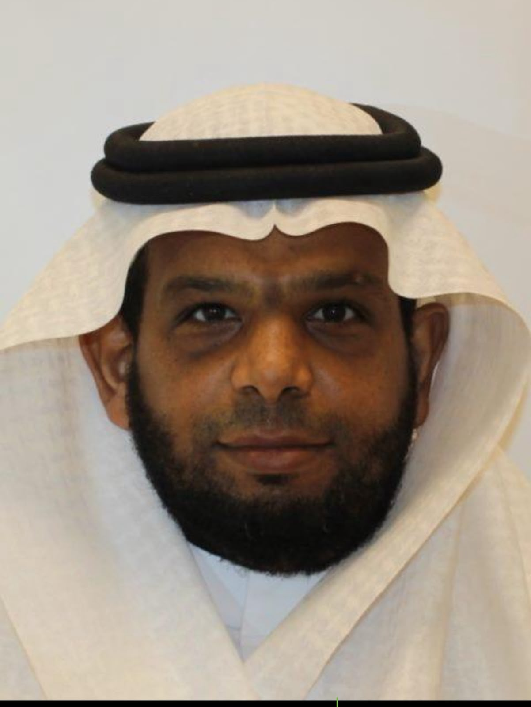

الموجه الطلابي
محمد يحيى الحازمي
بكالوريوس لغة عربية
ماجستير توجيه وإرشاد طلابي
حائز على درجة التميز من وزارة التعليم · مدرب معتمد TOT
فريقٌ يسعده الإصغاء إلى أبنائنا الطلاب ومساندتهم.
بكالوريوس لغة عربية
ماجستير توجيه وإرشاد طلابي
حائز على درجة التميز من وزارة التعليم · مدرب معتمد TOT
بكالوريوس لغة إنجليزية
ماجستير توجيه وإرشاد طلابي

بكالوريوس دراسات إسلامية
ماجستير أصول التربية الإسلامية